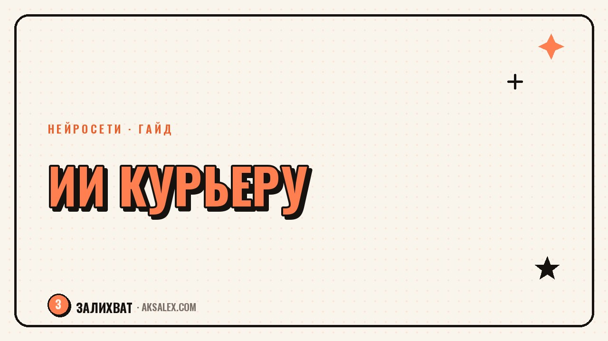

Нейросети для курьера: маршруты, доход и документы

Работа курьера - это гонка со временем: заказы идут один за другим, а на то, чтобы посчитать заработок за смену или разобраться в письме от налоговой, часто не остаётся сил. Нейросети не заменят ноги и велосипед, но снимут часть рутины вокруг доставки: помогут строить маршрут в голове, вести учёт заработка по дням и переводить документы на понятный язык. Разберём, где это реально работает, а где нет смысла тратить время.
Где нейросети реально помогают курьеру
Курьер работает в условиях, где каждая минута на счету: приложение агрегатора само строит маршрут, и спорить с ним бессмысленно. Но вокруг доставки остаётся много задач, которые нейросеть решает быстрее человека: прикинуть порядок точек, когда приложение даёт свободу выбора, быстро понять инструкцию от клиента на незнакомом языке, составить вежливый ответ в чат поддержки.
Второй блок пользы - учёт. Многие курьеры работают сразу в нескольких сервисах: доставка еды днём, маркетплейс вечером, разовые подработки по выходным. Нейросеть за пару минут раскладывает голосовую заметку "сегодня 14 заказов, бензин 600 рублей" в структурированную запись с суммами.
Три сценария, где стоит попробовать
- Прикинуть порядок точек вручную, когда в приложении несколько заказов без жёсткой привязки ко времени
- Перевести инструкцию от клиента или сообщение от диспетчера с незнакомого языка
- Разобрать фото штрафа, претензии от сервиса или письма от налоговой - что это значит и что делать
Учёт доходов и смен без таблиц в голове
Самая частая проблема курьера - не знать точно, сколько он зарабатывает в час. Кажется, что день был удачный, а по факту после бензина и амортизации техники осталось немного. Голосовой ввод в нейросеть решает это быстро: наговариваешь после смены пару фраз, а на выходе получаешь строку в таблице с датой, числом заказов, доходом и расходом.
Через пару недель такого учёта видно, какие часы и дни приносят больше, а какие забирают время впустую - это понимание, в какую смену выходить и когда работать не имеет смысла.
Я три месяца был уверен, что зарабатываю одинаково каждый день. Когда начал каждый вечер диктовать нейросети итоги смены, выяснилось, что по вторникам я трачу на бензин почти треть заработка - ездил дальше обычного маршрута без веской причины. Перестроил график и доход вырос без единой дополнительной смены.
Документы, штрафы и переписка с сервисами
Курьеры часто работают как самозанятые или по договору с агрегатором, и бумажная часть этой работы пугает не меньше, чем доставка в дождь. Письмо от налоговой, претензия от сервиса за опоздание, спор с клиентом в чате - всё это можно сфотографировать или скопировать текстом и попросить нейросеть объяснить простыми словами, что произошло и какие у тебя есть варианты ответа.
Отдельная тема - штрафы и парковочные уведомления. Нейросеть не отменит штраф, но быстро разберёт текст постановления и подскажет сроки оплаты или обжалования.
Что стоит перепроверять самому
- Точные суммы налогов и сроки оплаты - сверяй с личным кабинетом самозанятого или ФНС
- Юридические формулировки в спорных ситуациях - при крупном конфликте проконсультируйся с юристом
- Цифры штрафов и реквизиты - бери их из оригинала документа, а не из пересказа нейросети
Какой сервис выбрать: сравнение для курьера
Для задач курьера не нужна самая мощная нейросеть - важнее скорость, работа с голосом и фото прямо с телефона и бесплатный доступ без подписки. Вот как выглядят основные варианты по этим критериям.
| Сервис | Голосовой ввод | Работа с фото документов | Бесплатный доступ |
|---|---|---|---|
| ChatGPT (приложение) | Да, встроенный микрофон | Да, распознаёт фото и сканы | Базовая версия бесплатна |
| Google Gemini | Да, через голосовой ввод Android | Да, неплохо читает фото на русском | Бесплатен с Google-аккаунтом |
| Яндекс Алиса / YandexGPT | Да, голос по умолчанию | Частично, лучше с текстом | Бесплатен в приложении Яндекса |
| Голосовой блокнот + любая нейросеть-текст | Отдельное приложение для записи | Нет, нужен отдельный шаг | Обычно бесплатно |
Как начать за один вечер
Не нужно разом внедрять все сценарии - начни с одного, который закрывает самую больную задачу у тебя. Если это учёт денег, поставь приложение с голосовым вводом и диктуй итоги смены каждый вечер в течение недели. Если больная точка - документы, держи нейросеть под рукой на телефоне и фотографируй туда любую непонятную бумагу.
Через неделю такой привычки станет видно, экономит ли это реально время. Если да - добавляй второй сценарий. Если инструмент не прижился за две недели, смени его: курьерская работа и так требует дисциплины, не стоит добавлять к ней искусственную.
- День 1-2: установи приложение нейросети с голосовым вводом на телефон
- День 3-7: каждый вечер диктуй итоги смены - заказы, доход, расход
- Неделя 2: добавь разбор документов и переписки через фото
- Неделя 3: оцени, сколько времени и денег это сэкономило, и реши, что оставить
Частые вопросы
Какая нейросеть лучше для курьера бесплатно?
Для большинства задач достаточно бесплатных версий ChatGPT или Google Gemini - они работают с голосом и фото прямо в приложении на телефоне. Платная подписка имеет смысл только если нужно разбирать очень много документов каждый день.
Может ли нейросеть построить маршрут доставки лучше приложения агрегатора?
Нет, маршрутизацию агрегатора нейросеть не заменит - у него есть точные карты и данные о трафике в реальном времени. Нейросеть полезна, когда нужно самому решить порядок точек при свободном выборе или быстро прикинуть логику без привязки к одному приложению.
Как нейросеть поможет с налогами самозанятого курьера?
Она объяснит простыми словами, что значит письмо из налоговой, какие сроки оплаты и как читать квитанцию. Точные суммы и сроки всегда проверяй в приложении «Мой налог» или личном кабинете ФНС, а не доверяй цифрам из пересказа.
Стоит ли диктовать нейросети личные данные клиентов?
Лучше не передавать адреса, телефоны и имена клиентов целиком - достаточно общих цифр по заказам и доходу. Если нужно разобрать спорную переписку, убери из текста личные данные до того, как отправишь её в нейросеть.
Поможет ли нейросеть разобраться со штрафом за парковку во время доставки?
Да, она быстро объяснит текст постановления, сроки оплаты и обжалования, а также поможет составить черновик жалобы, если есть основания не согласиться. Итоговое решение и реквизиты для оплаты всегда бери из оригинала документа.
Раз тема оказалась полезной, вот что почитать следующим. Запись интервью превращается в готовый текст поста за вечер, если доверить расшифровку и структуру нейросети.
Читать статью →а не вручную